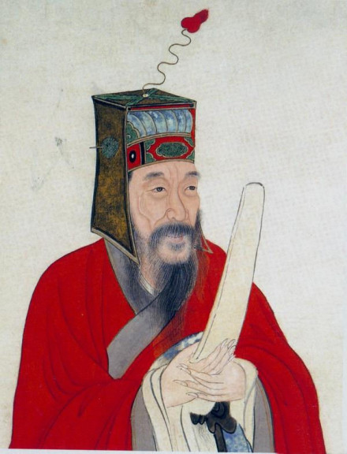

王守仁(1472年10月31日一1529年1月9日），本名王云，字伯安，号阳明，浙江余姚人，汉族。明朝杰出的思想家、文学家、军事家、教育家，南京吏部尚书王华的儿子。
弘治十二年（1499年)，中进士，起家刑部主事，历任贵州龙场驿丞、庐陵知县、右金都御史、南赣巡抚、两广总督、南京兵部尚书、左都御史等职，接连平定南赣、两广盗乱及朱宸濠之乱，获封新建伯，成为明代凭借军功封爵的三位文臣之一。嘉靖八年十一月(1529年1月9日)，逝世，时年五十七。明穆宗继位，追赠新建侯，谥号"文成"”。万历十二年（1584年），从祀于孔庙。